Gross Domestic Product
GDP as the top-down macro anchor, and why the stock market leads it by ~6 months
GDP is a lagging, backwards-looking measure of the economy, but the stock market discounts the future value of companies, so it acts as a ~6-month leading indicator of Earnings and GDP that you can trade with a Long or Short bias.
The gist
- Real GDP (Nominal GDP adjusted for inflation) is what commentators mean by 'GDP'; a recession is two consecutive quarters of negative Real GDP growth.
- GDP is a lagging, backwards-looking measure reported quarterly with a lag (US: Q1->April, Q2->July, Q3->October, Q4->January); the stock market trades daily and leads Earnings and GDP.
- Peak correlation is at a 6-month lead: S&P500 YoY vs US Real GDP YoY = 56.56% at 6 months (Eurostoxx 600 = 61.63%), higher than any other lag.
- The 'Quadnomial' contingency analysis over 281 US quarters (1950-2020): index and GDP move the same direction 69.04% of the time (Eurozone 72.28%); only 5.34% is index-up/GDP-down.
- When they diverge it is overwhelmingly index-down while GDP is up (25.62%) = short-term profit-taking, not a GDP signal.
- Not every index leads its economy: the Shenzhen Composite vs China GDP is unreliable (best-lag correlation ~14%), so build the global macro view from US and Eurozone GDP.
- Predicting forward GDP predicts forward Earnings, which drives a Long (Expansion) or Short (Contraction) portfolio bias; correlation breakdowns are exactly why a Long/Short mandate wins.
Where GDP sits in the pro-trader framework
- The 20-60 day systematic framework splits THEORY (Fundamentals -> Timing) and IMPLEMENTATION (Trade Structure -> Risk Management), fed by a Quantitative + Qualitative Process.
- Fundamentals is the MOST IMPORTANT stage; this GDP lesson is the very first step of the macro top-down Fundamentals work.
- Fundamentals produce Macro Views, whose two jobs are to Predict GDP and, from that, Predict the Stock Market.
Top-down analysis starts by forming a view on the economy (GDP) and then deriving the stock-market view from it. This is the entry point of the professional Fundamentals process.
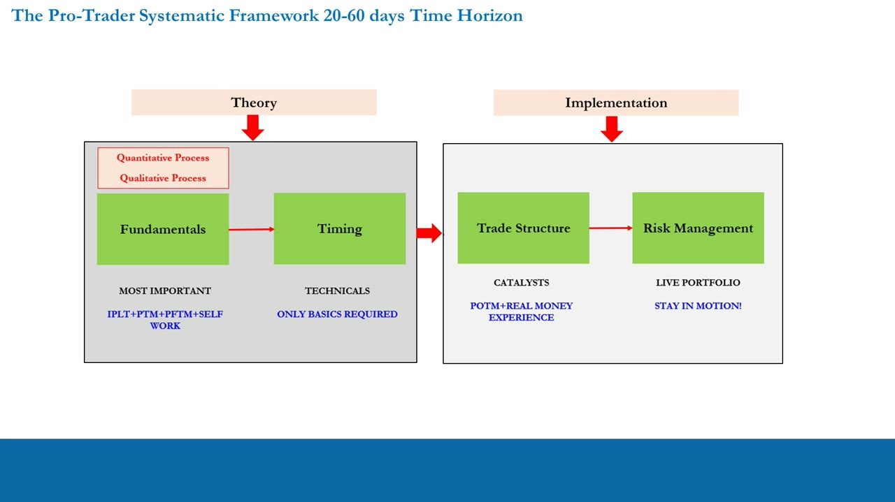
GDP definitions
- Nominal GDP: the total income of a country for a given year.
- Real GDP: the total income of a country for a given year adjusted for inflation. When economists and commentators say 'GDP' they mean Real GDP.
- Recession: two consecutive quarters of negative Real GDP growth.
- Correlation: two variables correlated positively (negatively) move in the same (opposite) direction.
- Leading indicator moves BEFORE the economy; coincident indicator moves at the SAME TIME; lagging indicator moves AFTER.
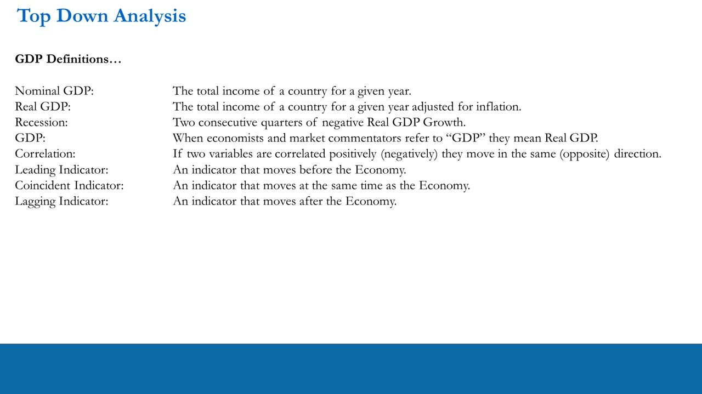
GDP -> Earnings -> S&P500, and why the market leads
- The chain is GDP -> Earnings -> S&P500, with a feedback loop back from the S&P500 to GDP.
- US GDP release calendar: Q1 reported in April, Q2 in July, Q3 in October, Q4 in January.
- GDP is a backwards-looking measure of all the transactions that make up the 'value' of the economy; the stock market speculates on the future (forward) value of companies.
- GDP is a lagging indicator, but the stock market trades every day Mon-Fri and is a LEADING indicator to Earnings and GDP.
This is why the market turns before the economy does: it is discounting the future while GDP only reports the past.
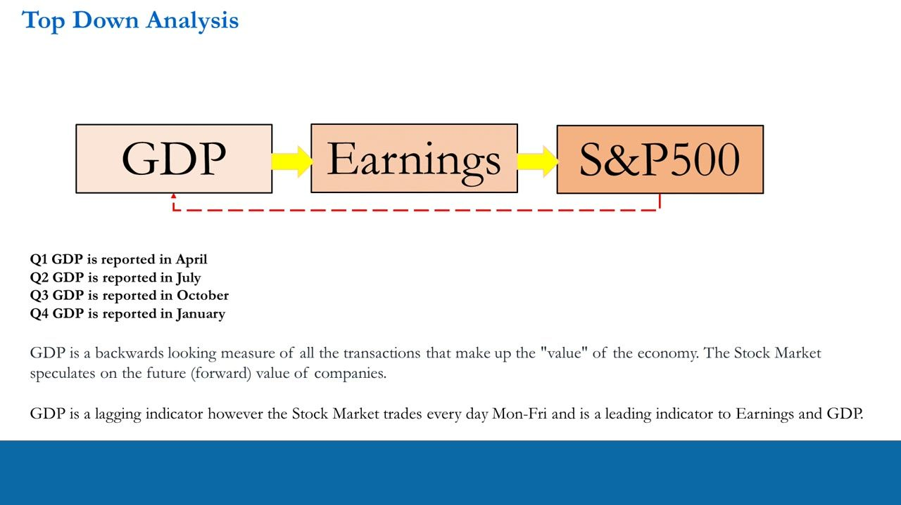
The scoring method: S&P500 6-month lag vs US Real GDP
- A quarterly table (1950-2020) compares S&P500 returns lagged by 6 months against US Real GDP, scoring each quarter by whether each was up or down.
- Both DOWN -> (0,0), score 0; both UP -> (1,1), score 2.
- S&P500 DOWN and GDP UP -> (0,1), score 1; S&P500 UP and GDP DOWN -> (1,0), score 1.
- Tracking these outcomes across every quarter measures how well the S&P500 (leading by 6 months) tracks Real GDP.
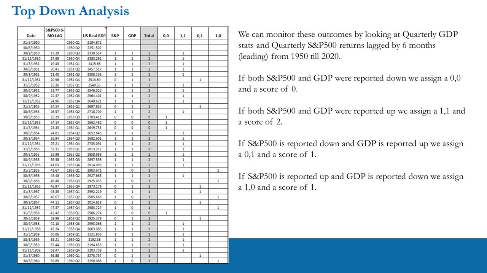
The contingency table: S&P500 leading US GDP
- 281 quarters (1950-2020), S&P500 leading GDP by 6 months: A (0,0) = 23 / 8.19%, B (1,1) = 171 / 60.85%, C (0,1) = 72 / 25.62%, D (1,0) = 15 / 5.34%.
- Both same direction (A+B) = 194 = 69.04%; split the other way (C+D) = 87 = 30.96%.
- GDP explains 60.85% (1,1) + 8.19% (0,0) = 69.04% of S&P500 moves.
- When it doesn't, it's mostly the S&P500 down while GDP is up (C = 25.62%) = profit-taking / price corrections while underlying growth remains.
- Only 5.34% of times has the S&P500 moved up while GDP went down (D) since 1950.
- Expansions last longer than contractions, which tend to be sharp but larger in magnitude.
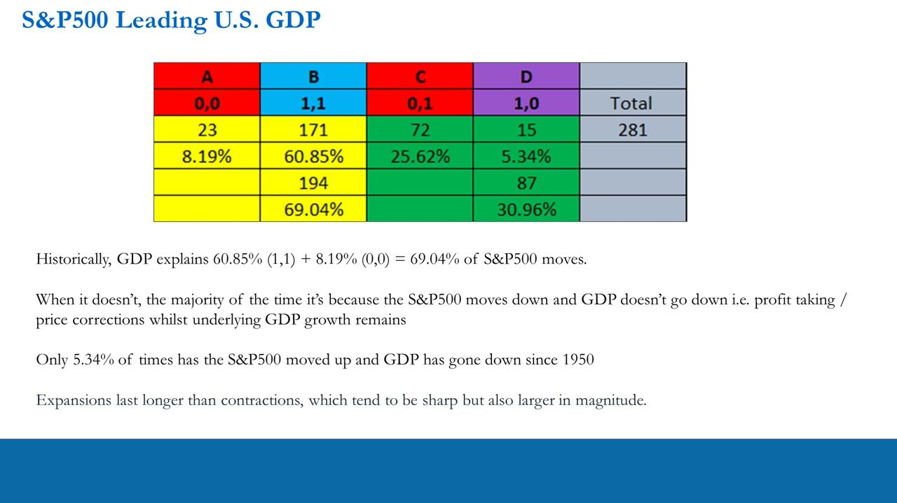
Mapping the states to trading actions
- A = (0,0) -> predict GDP will fall -> Sell S&P500.
- B = (1,1) -> predict GDP will rise -> Buy S&P500.
- C = (0,1) -> predict Profit-taking -> Sell S&P500.
- D = (1,0) -> Unpredictable -> Stay Flat.
Three of the four historical states (A, B, C = 94.66%) map to an actionable directional call; only D (5.34%) is 'stay out'.
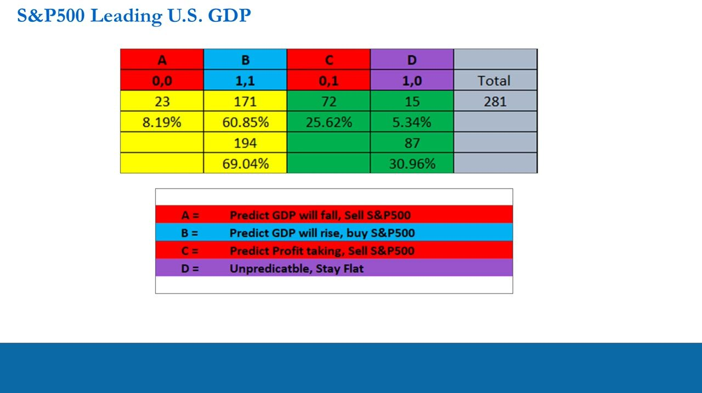
Implication 1: calling direction 60-80% of quarters
- If we can predict GDP (the 0,0 and 1,1 states, via Fundamentals) and take profits at the right times (the 0,1 state, via TA/PA), market direction is right 8.19% + 60.85% + 25.62% = 94.66% of the time.
- Perfection never happens across a career, but if we can call market direction 60-80% of quarters, selecting the right positions makes us very profitable.
- The probability of being right using top-down fundamentals to predict quarterly S&P500 returns is far higher than day trading (which is ~50/50, expected return zero).
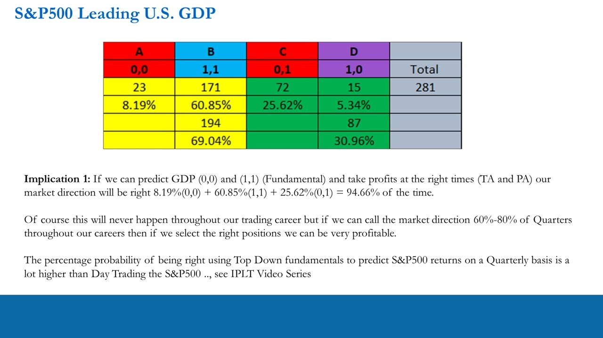
Implication 2: quarterly equity volatility makes it pay
- S&P500 quarterly volatility is large: DoR ~6.822% and ATRP ~11.903% (Daily DoR 1.035% / ATRP 1.398% by comparison).
- Vol ladder by asset class rises from Government Bonds -> Corporate Bonds -> FX -> Equity Indices -> Mega/Large/Mid Cap stocks (Mid Cap daily ATRP 4.416%).
- Being right 60-80% of the time not only beats day trading's 50/50 but earns significantly higher, probability-adjusted returns.
- Combining a high-probability quarterly directional call with large quarterly equity volatility is what makes the top-down approach superior.
The quarterly frequency where GDP prediction operates still carries large S&P500 volatility, so a correct quarterly directional call has meaningful payoff.
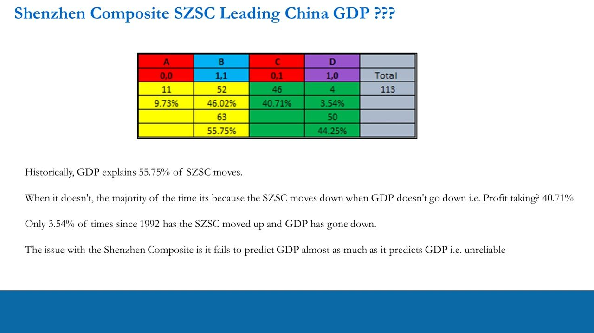
S&P500 vs GDP 10-year rolling correlation: the 6-month lag peaks
- Rolling 10-year correlation of S&P500 YoY (6-month lag) vs US Real GDP YoY holds mostly 40-80%, dropping to ~0% around 1994 and ~-10% in 2020.
- Average 10-year correlation by lag: No Lag 31.20%, 3-Mo 49.11%, 6-Mo 56.56% (peak), 9-Mo 50.37%, 12-Mo 34.90%.
- The 6-month lag gives the strongest correlation, i.e. the S&P500 leads Real GDP by ~6 months.
This is why the market is treated as a ~6-month leading indicator of the economy.
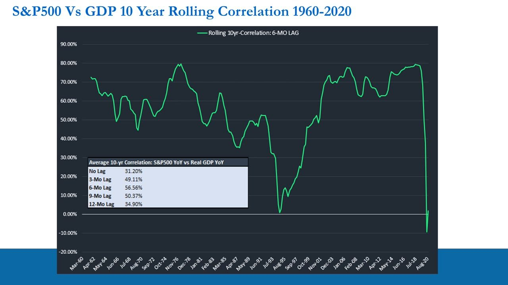
Not every index leads: the Shenzhen Composite vs China GDP
- Same contingency method on the Shenzhen Composite (SZSC) vs China GDP, 113 quarters (since 1992): A (0,0) 9.73%, B (1,1) 46.02%, C (0,1) 40.71%, D (1,0) 3.54%.
- Same-direction (A+B) = 55.75%, much weaker than the S&P500's 69.04%.
- 5-year rolling correlation is extremely unstable (+80% to -75%); even at its best 6-month lag it is only 14.15% (vs ~57% for the S&P500).
- The SZSC fails to predict GDP almost as much as it predicts it, so it is an unreliable leading indicator.
Not every index is a good leading indicator of its economy, so the actionable macro focus is US and Eurozone GDP, not China's index.
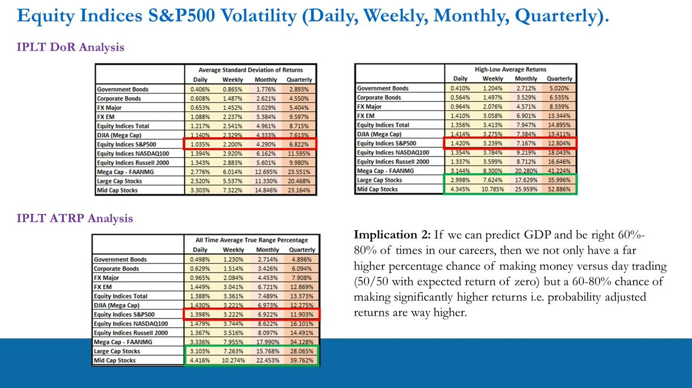
Why the correlation breaks down (and stays positive)
- 2020: massive Fed and Government stimulus broke the correlation, GDP was hit hard while the market was up YoY.
- The mid-80s to mid-90s saw the 10-year rolling correlation trend down slowly (the 1985-1995 subset is the flat, orange line on the scatter).
- The 1980s were high-inflation with aggressive rate easing and a heavy Fed policy response (late-80s to early-90s = higher rates after the huge decrease).
- The full series (including 1985-1995) still has a POSITIVE slope; breakdowns are regime-driven (stimulus, rates) and temporary, not a failure of the relationship.
The relationship's strength varies with the macro regime, especially interest-rate and inflation cycles, but overall it remains positive.
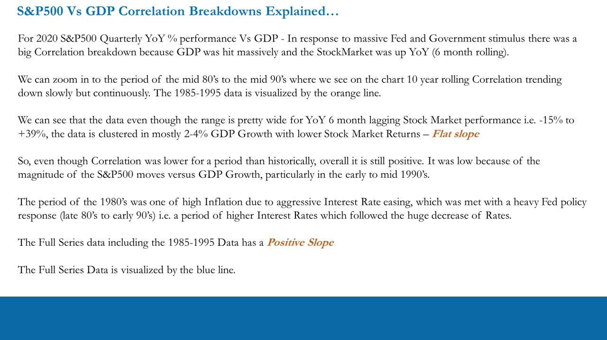
The Long/Short rationale
- The S&P500 predicts GDP in the majority of cases, but as traders we can't know the magnitude of the move with great certainty (especially when both go up).
- When they diverge, most of the time GDP is positive and the S&P500 negative = profit-taking.
- Shocks like 2020 and Fed intervention create lower correlations, but on the whole we tend towards positive correlation and predicting GDP -> Earnings -> stock returns, with unknown magnitude.
- This is exactly why we run a Long/Short mandate: an L/S book outperforms the Index and long-only during shocks and correlation breakdowns, and lets us react for outsized (Absolute Return) gains.
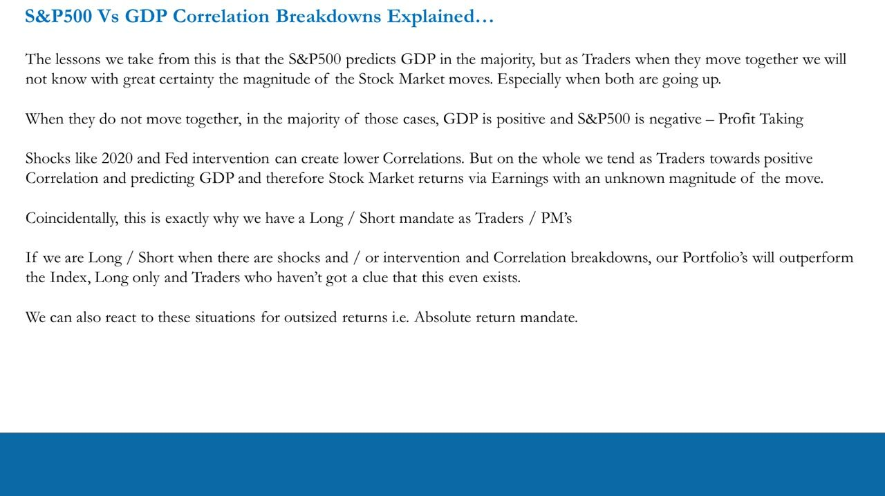
The global GDP picture: predict US and Eurozone
- Treat the Eurozone (19 members, common currency) as a single Economic Area: 62.2% the size of the US and 90% the size of China.
- Global Real GDP in 2019 was $87.552 trillion: US 24.8%, China 18.2%, Eurozone 15.52%.
- US + China + Eurozone = $49.5 trillion = 56.5% of Global GDP.
- We must predict US and Eurozone GDP to build a Global Macro View, because China's index is an unreliable predictor (per the SZSC analysis).
Conclusions: turning the macro view into a bias
- On a 6-month lag, stock markets reliably predict GDP via positive correlation: Quadnomial same-direction US 69.04%, Eurozone 72.28%.
- When they don't, it's mostly the Index down while GDP is up = short-term overextension / profit-taking.
- GDP matters because it reveals the growth potential in the economy and its positive correlation to company (stock) Earnings.
- Predicting forward-looking GDP predicts forward-looking Earnings, so we trade with a Long or Short bias by our view of Expansion or Contraction.
- Expansions last longer than contractions; if GDP is expected to contract, Earnings cannot reasonably be growing.
- The macro questions: which way is the wind blowing and how hard? What bias for the portfolio (Long / Short / Neutral)? Are we in a Bull Market (Expansion) or Bear Market (Contraction)?
This ties the GDP macro view directly to the directional bias and the bull/bear 'field of play' from Lesson 2. Note GDP data is subject to revisions, so figures shift slightly over time.
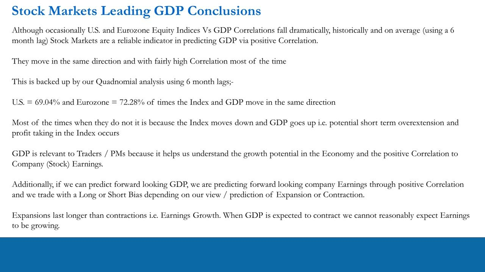
Glossary
- Nominal GDPThe total income of a country for a given year.
- Real GDPNominal GDP adjusted for inflation; when commentators say 'GDP' they mean Real GDP.
- RecessionTwo consecutive quarters of negative Real GDP growth.
- Leading indicatorAn indicator that moves BEFORE the economy (a coincident indicator moves at the same time; a lagging indicator moves after).
- CorrelationTwo variables correlated positively (negatively) move in the same (opposite) direction.
- Quadnomial / contingency analysisScoring each quarter by whether the index and GDP were each up or down (0,0 / 1,1 / 0,1 / 1,0) to measure how often they move together.
- 6-month lagThe horizon at which index YoY correlates most strongly with Real GDP YoY (S&P500 56.56%, Eurostoxx 600 61.63%) — i.e. the market leads GDP by ~6 months.
- DoR / ATRPDistribution of Returns (avg standard deviation of returns) and Average True Range Percentage — the volatility measures; S&P500 quarterly DoR ~6.822%, ATRP ~11.903%.